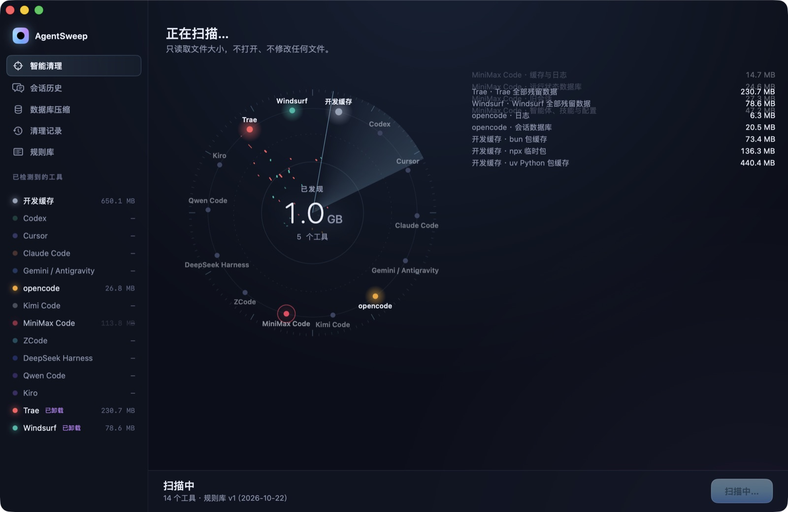
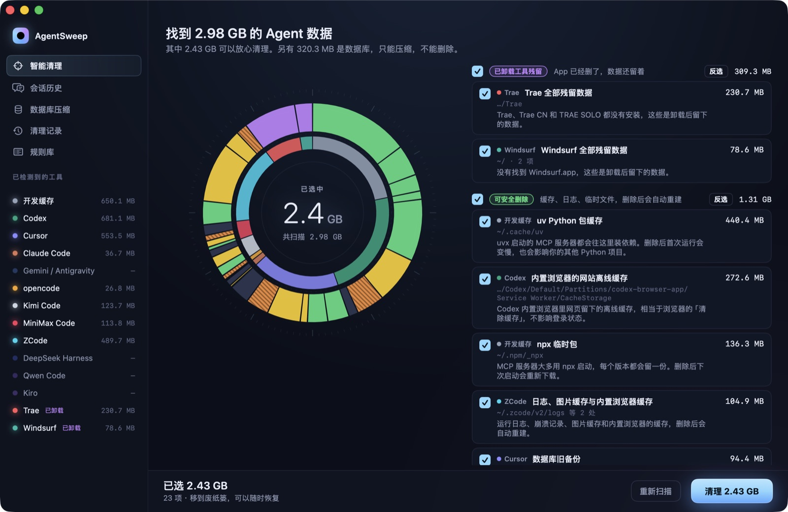
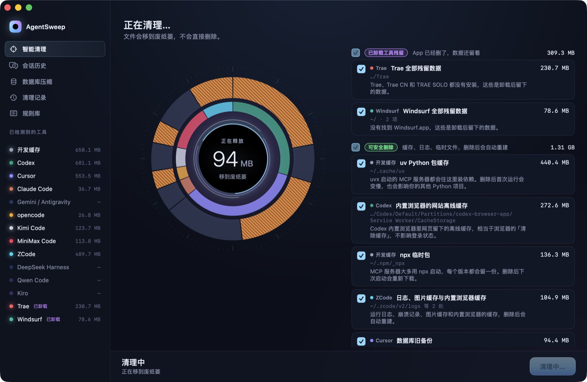

Win back the disk your AI coding tools took
Claude Code, Codex and Cursor keep writing sessions, caches and packages, and leave piles behind when you uninstall them. AgentSweep knows their folders, tells you what every item is and what deleting it does, and only clears what it can prove is safe.
of data left by AI coding tools
safe to clear: it rebuilds itself or is long unused
AI coding tools with rules today
Measured on the author's own machine. Yours will differ.
Scan, understand, move to the Trash
It takes under a minute. Scanning only reads file sizes and never opens or changes a file; before you clean, you see every path and what it is.

Every tool is a star on the orbit
Each tool lights up as it is scanned and its data streams into the counter. Tools you already uninstalled are flagged on their own.

Every item says what deleting it does
Tools inside, items outside, colored by risk. Tick items one by one or a whole group at once, and hover for the explanation.

Into the Trash, and back if you want
AgentSweep never deletes outright. Every clean records the original paths so you can restore it. Space is freed when you empty the Trash.
Built for AI coding tools
A general cleaner knows a folder is big. AgentSweep knows which tool owns it and what it is for.
Knows each tool's folders
14 tools including Claude Code, Codex, Cursor, Kimi Code and ZCode, with a rule and an explanation for every path.
Export sessions before deleting
Browse every Claude Code and Codex session, filter by project and age, and export them to Markdown.
Databases are compacted, never deleted
Chat databases of Cursor and Codex are backed up, then compacted once the tool quits. You see exactly how much comes back.
Finds leftovers
Data from tools whose app is long gone, like Trae and Windsurf, is picked out on its own.
Keeps up with new tools
Rules are a JSON file; drop one into the local rules folder to add a tool. It also lists folders that look like uncovered AI tools.
Updates itself
Checks GitHub for a new version once a day and verifies its signature before installing. New tool rules arrive with each release.
The ones you installed are probably here
Shared dev caches (uv, npx, bun, pip) count too: most MCP servers are launched through them.
It touches what it knows, nothing else
Every rule has one of five levels. Files no rule covers are never touched.
The tool's app is gone and its data remains
selectedCaches, logs and temp files that rebuild themselves
selectedSessions untouched for 30 days; export them first if you like
selectedChat databases: never deleted, only backed up and compacted
lockedCredentials, config, skills, plugins and program files
lockedFree, open source, no data collected
- Download AgentSweep.dmgOpen it and drag AgentSweep into Applications.
- Right-click → Open the first timeThe build is not notarized yet, so macOS says it cannot verify the developer. Right-click the app and choose Open, or run:
xattr -dr com.apple.quarantine /Applications/AgentSweep.app - Updates arrive on their ownThe app tells you when a new version is out and installs it in one click. Or use AgentSweep → Check for Updates….
Questions you might have
Is it really free?
Yes. AgentSweep is MIT licensed, with no paid tier, no ads and no analytics. Its only network request checks GitHub for a new version.
Could it delete something I need?
It only handles paths its rules name. Credentials, config, skills and plugins are protected, and chat databases are compacted, never deleted. Every clean goes to the Trash and can be restored from the History page.
Why didn't my free space change?
Files in the Trash still take space. Once your tools run fine, empty the Trash to free it.
Why does macOS say it can't verify the developer?
The build is not notarized yet. Right-click the app and choose Open the first time, or run xattr -dr com.apple.quarantine /Applications/AgentSweep.app. The code is public, and you can build it yourself.
How do updates work?
From 0.2.0 on, the app checks once a day and offers a one-click install, verifying the update's signature first. Settings let you turn checks off or install automatically. 0.1.0 needs one manual download.
My tool isn't on the list. What now?
The Rules page lists folders that look like uncovered AI tools. Write a rule following the README and drop it into the local rules folder, or send it on GitHub so the next release brings it to everyone.
How do I uninstall AgentSweep?
Move the app to the Trash. To remove everything, also delete ~/Library/Application Support/AgentSweep (clean history and database backups).
Scan first. See what your agents left behind.
Scanning only reads. Decide after you see the results.